6. Viaje por Sudoeste de España
6. Viaje por Sudoeste de España
15 a 18 de octubre 2021
Día 2, de Zafra a Palos de la Frontera
16 de octubre 2021
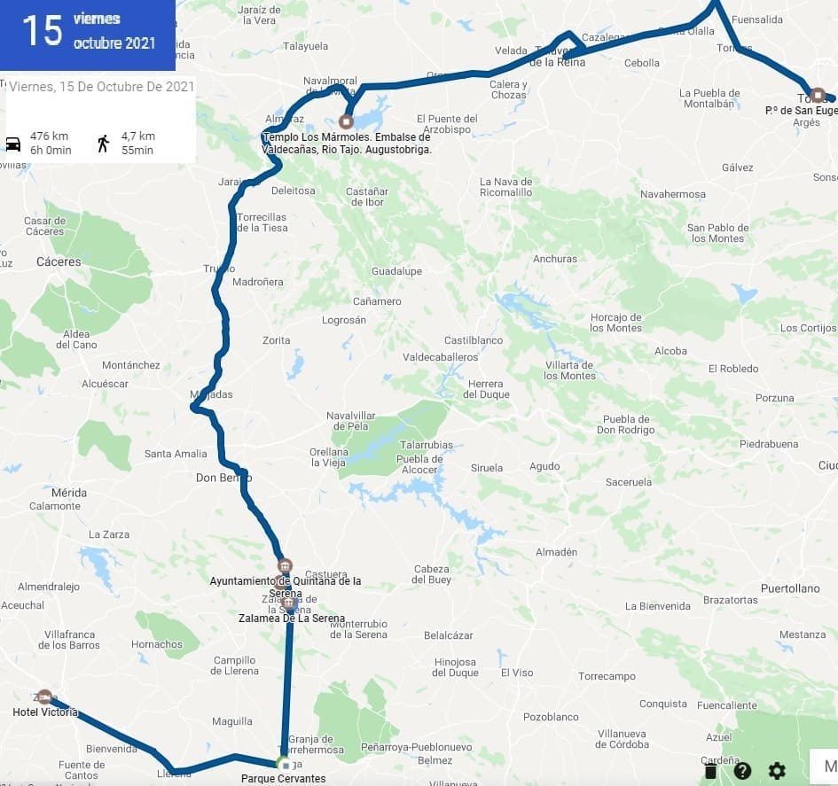
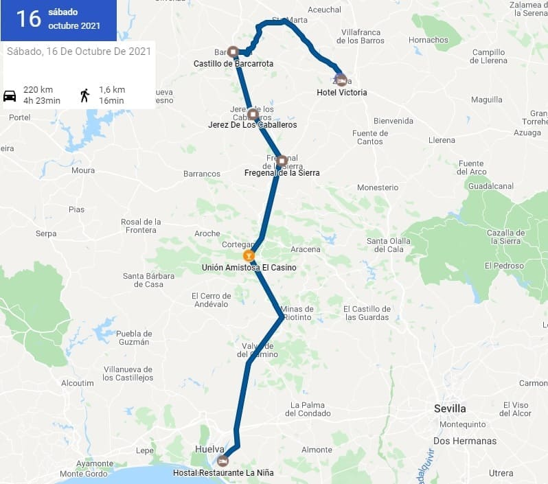


96. Zafra
96. Zafra
Zafra es una de las ciudades más importantes y más pobladas de la provincia de Badajoz. Antiguamente era el punto de conexión del mercado de toda la zona. Aquí llevaban los ganaderos y agricultores sus hortalizas y animales para comerciar. Existían dos grandes plazas, la plaza Grande y la plaza Chica. Esta plaza esta considerada una de las mejores plazas medievales de España y ha sido utilizada para rodar multitud de películas.
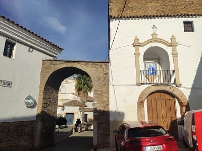
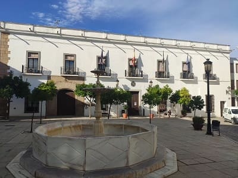
Zafra tiene un casco histórico reducido en la que la mayoría de los edificios son de color blanco, como el del ayuntamiento. El material empleado principal es el ladrillo, incluso en los arcos como el arco del Cubo que se ve en la fotografía.
La Plaza Chica de Zafra ha sido desde sus inicios centro del comercio de Zafra. Lugar de mercados desde el Siglo XVI, de ahí el origen de la curiosa «Vara de Medir», que tallada en una de sus columnas preside la Plaza Chica. En ella se distingue 5 marcas o muecas que corresponden a las distintas medidas utilizadas en la época: palmo, cuarta, pie, braza y codo. Se piensa que el actual emplazamiento de la Vara de Medir no es el original, ya que en su parte trasera, la columna es plana, lo que hace pensar que pudo estar apoyada sobre una pared. Esta vara es la que se ve junto con la columna en la fotografía inferior.
A la Plaza Chica se accede desde la Plaza Grande a través del conocido como «Arquillo del Pan», llamado así ya que allí se encontraba una panadería. En dicho arco podemos encontrar una hornacina dedicada a la Virgen de la Esperancita, donde se encuentra una réplica de la antigua figura de madera policromada en un pequeño retablo Barroco con las figuras de Santo Domingo y San Francisco de Asís. La imagen original de la Virgen de la Esperancita se conserva en la Iglesia de la Candelaria. En las siguientes imagenes la plaza de España de Zafra, una de las más grandes y modernas que tiene un gran parque, y detalles de la plaza Grande y la plaza Chica, así como la famosa vara de medir.
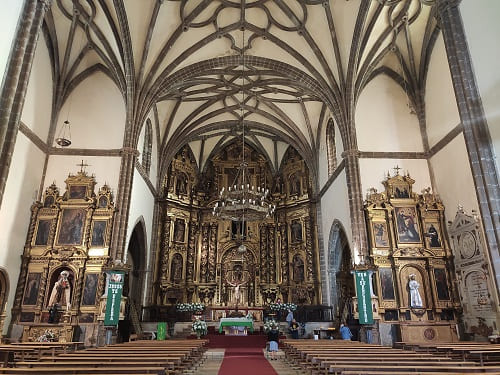
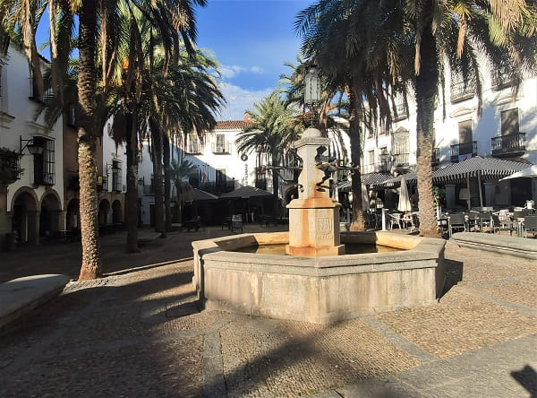
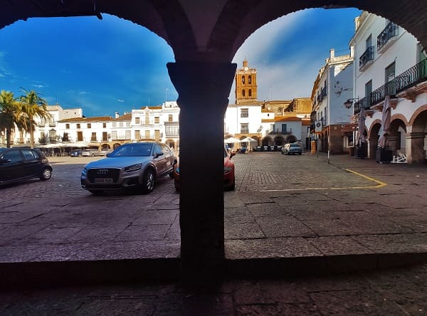
Además en toda la zona dominaban unos nobles con el título de duques de feria y en ella se encuentra el palacio de estos duques, hoy en día es parador nacional que se ve en la primera imagen. El palacio de los duques de Feria de Zafra fue edificada sobre un castillo de principios del siglo XV. Cuenta con 9 torres y tiene detalles nobiliarios de la época como artesonado y muebles.
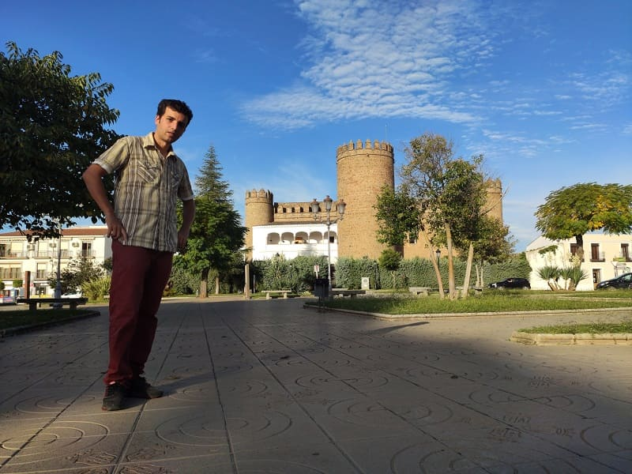
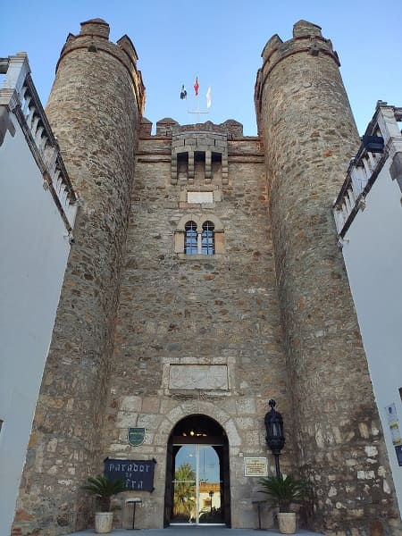
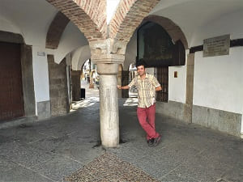
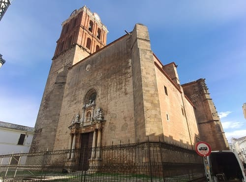
Como edificios religiosos importantes es la iglesia de la Candelaria, donde reposan los restos de los duques de Feria. Esta iglesia sería edificada sobre otra anterior a mediados del siglo XVI. El interior es de estilo gótico y luce varios retablos de estilo renacentista y barroco. El altar mayor es barroco y es uno de los más grandes y valiosos de la provincia. La iglesia sería colegiata a principios del siglo XVII. Cuenta con numerosas esculturas y pinturas en su interior.
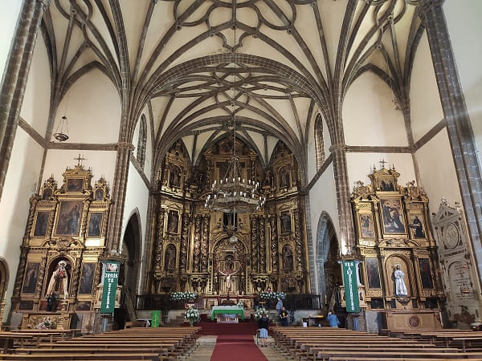
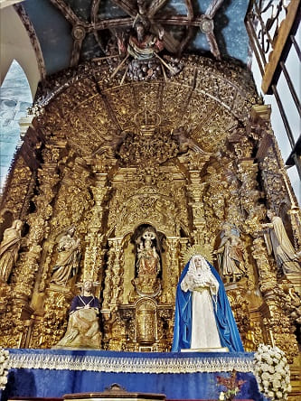
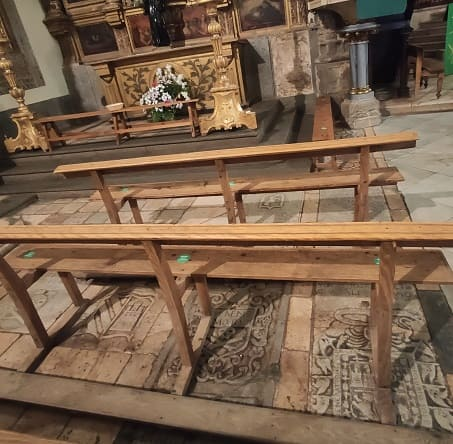
El otro edificio religioso más importante a parte de la colegiata es el convento de Santa Clara o monasterio de Santa María del Valle.
Posee una iglesia de estilo mudejar del siglo XV. Tiene el primer sepublcro de los duques de Feria realizado en alabastro que se muestra en la fotografía. También un antiguo reliquiario.
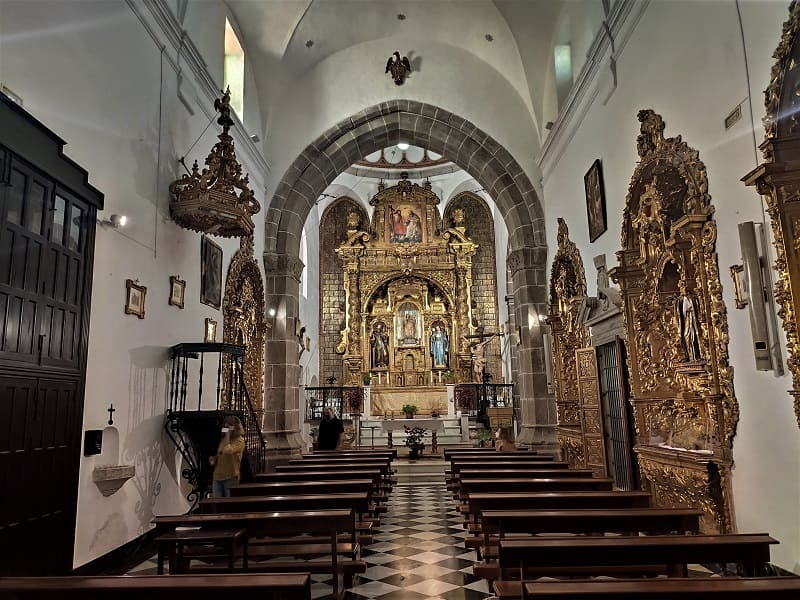
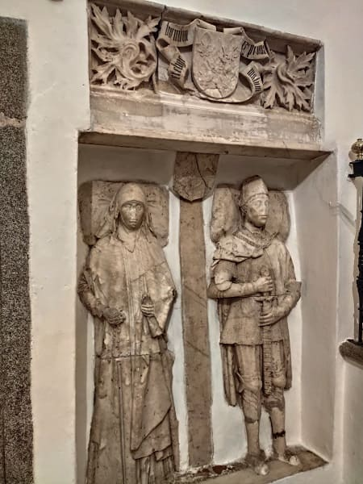
La otra gran parte a ver es el museo de Santa Clara, que acoge bienes religiosos de toda la ciudad, incluido trajes de obispos, custodias y otros objetos. Además las monjas del lugar realizan dulces y pastas.


97. Barcarrota
97. Barcarrota
Después continuaría mi viaje hacia el sur pero tras mirar el mapa vi un pueblo que quizás podría ser objeto de visita. Este pueblo es
Barcarrota, que tiene una plaza muy bonita. El pueblo es uno de los que más contribuyo en hombres a la conquista del nuevo Mundo, cuyo conquistador más conocido es Hernando de Soto, que conquisto la Florida.

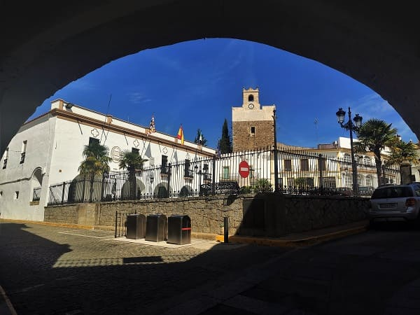
El edificio más singular del pueblo es
el castillo de las siete torres, en cuyo interior hicieron la plaza de toros del pueblo como algún otro pueblo de esta provincia que luego visitaría. Es del siglo XIV y era posesión de la orden de Alcantara. Su interior lo ocupa hoy la plaza de toros del pueblo. La muralla del castillo y el recinto esta formado por casas que aprovechaban su muralla, con lo que la plaza esta integrada en el centro del pueblo, pasando desapercibido al visitante ya que cuesta saber el punto de entrada para ver la plaza y el castillo que es a través de una de las puertas de las casas.
Como edificios religiosos la iglesia de Santa María del Soterraño, del siglo XIV de estilo gótico. Esta iglesia es de gran belleza en su interior, con retablos de estilo barroco y bovedas de crucería góticas. La virgen del Soterraño es una talla muy antigua posiblemente prerómanica. Otra de las iglesias es la iglesia de Santiago, de estilo tardorománico del siglo XIII. Posee un retablo barroco y es la que se muestra en la fotografía siguiente.
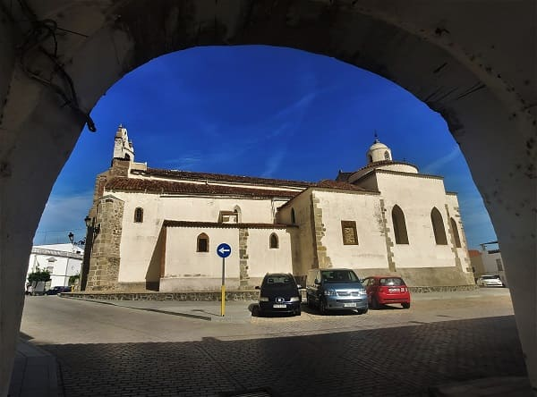

Este pueblo además es conocido por tener en su territorio varios dolmenes de la prehistoria.

98. Jerez de los Caballeros
98. Jerez de los Caballeros
Siguiendo mi viaje hacía el sur visitaré uno de los pueblos más bonitos de España y más importantes de la época medieval,
Jerez de los Caballeros. Jerez de los Caballeros cuenta con un rico patrimonio que atestigua monumentos de distintos estilos como el mudéjar, el gótico o el barroco. Por todo ello fue declarado Conjunto Histórico-Artístico en 1966. Jerez es conocido como la ciudad de las cinco torres, por su conjunto de torres barrocas, construidas con ladrillo, yeso y barros vidriados.
Esta ciudad además fue sede de los caballeros templarios y así lo atestiguan algunos restos de sus torreones en las murallas. Desde lo alto se puede tener una bonita panorámica de todo el pueblo.
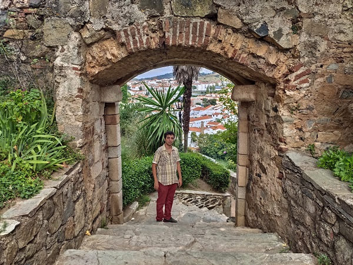
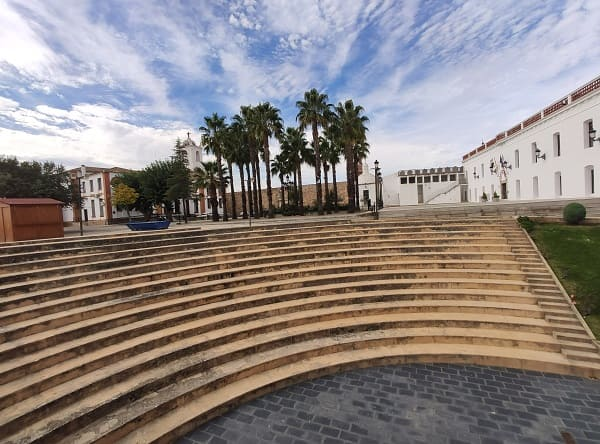
Tiene conservada toda la muralla medieval del siglo XIII y destacan las bonitas torres en el cielo. De las puertas de la muralla solo quedan dos de las seis que tenía, una se muestra en la imagen. Conserva trozos
del castillo templario que fue construido sobre una alcazaba musulmana de la que aun quedan torres y pequeños vestigios.
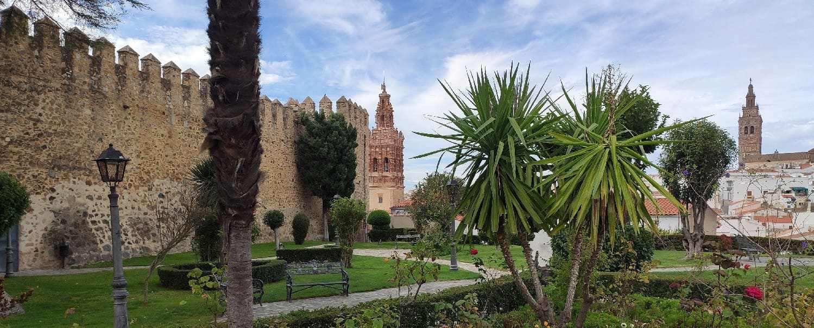
Así como otras ciudades extremeñas son cuna de conquistadores de las américas como Medellín o Trujillo, Jerez tiene a Nuñez de Balboa como conquistador. Existe una casa museo sobre el mismo.
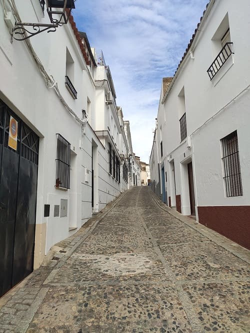
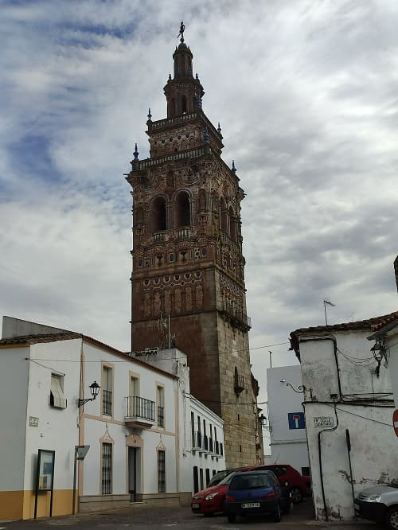
Las iglesias decoradas con azulejos o con ladrillos colorados que le dan un aspecto muy moderno para aquella época y una traza inconfundible dentro de todos los pueblos españoles. La más característica que se ve en la imagen es la
iglesia de San Bartolome, del siglo XV. La torre es muy similar a la de la giralda de Sevilla, con una decoración de ladrillo, yeso y cerámicas coloreadas.
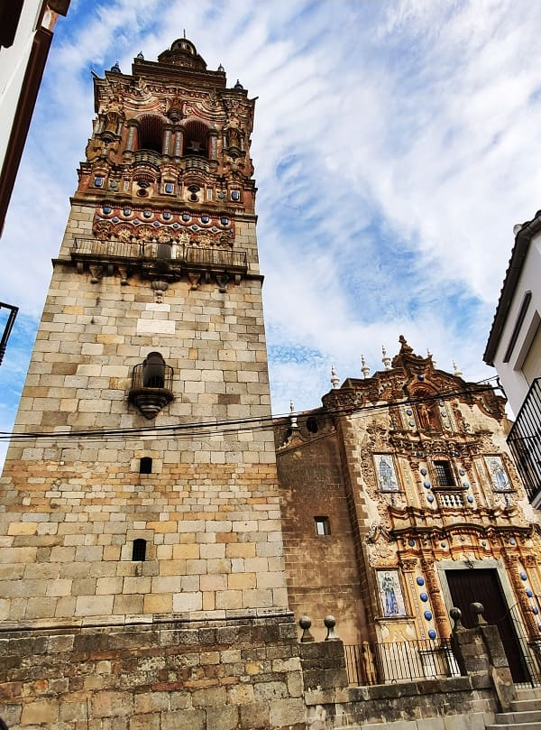
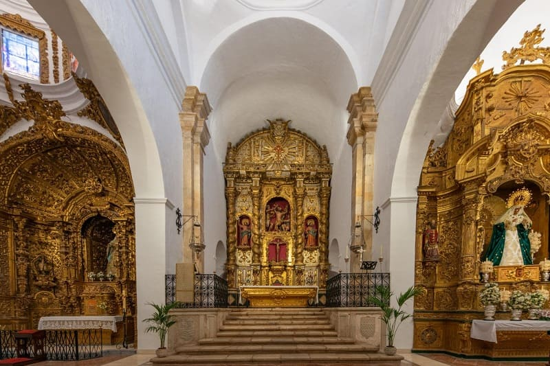
Otra de las iglesias es
la iglesia de san Miguel Arcangel, del siglo XV que sería reconstruida en el siglo XVIII por el terremoto de Lisboa. Es de estilo barrcoco mayormente con algunas trazas remanentes de estilo gótico.
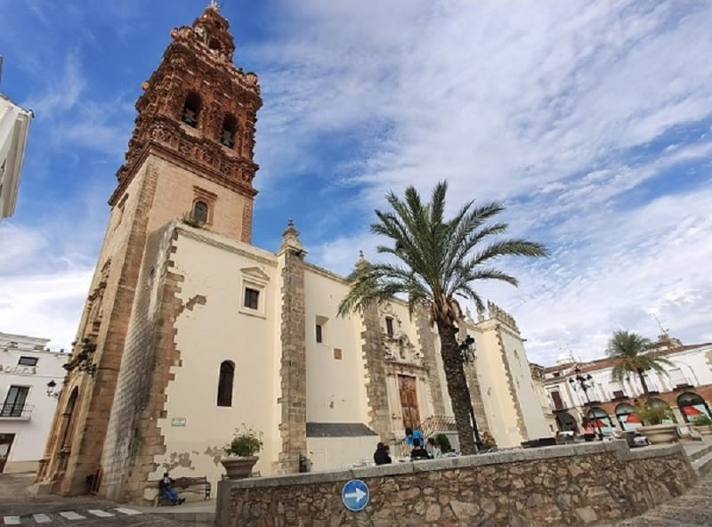
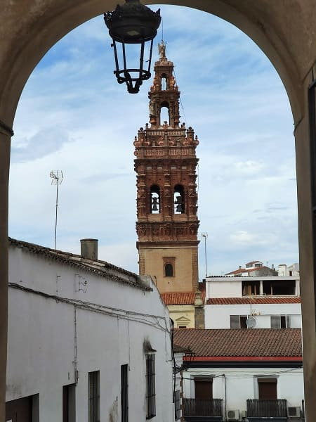
Por úlitmo la iglesia más antigua y más grande es
la iglesia de Santa María de la encarnación. Esta iglesia fue construida sobre la antigua mezquita. De esta conserva parte del mihrab. Sería iniciada a principios del siglo XVI en estilo gótico. El interior es de estilo renacentista y la torre de estilo mudejar. Las siete capillas y retablos son de estilo barroco y renacentista. Destaca el coro del siglo XVIII, siendo una iglesia tan importante que podría tener el rango de concatedral.

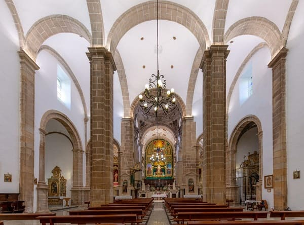
Además de estas iglesias esta la de Santa Catalina, que pese a ser antigua, no destaca tanto como las otras. Es de estilo barroco y neoclásico.
Por último destacar que tiene cinco conventos en pie como son
el convento de San Agustín,
el convento de Nuestra Señora de la Consolación,
el convento de la Madre de Dios (hoy instituto),
el convento de Aguasantas (colegio de educación especial) y
el convento de Gracia(hoy hotel de cuatro estrellas), existiendo otros dos desaparecidos como el de la Trinidad y el de Nuestra Señora de la Luz..
99. Fregenal de la Sierra
99. Fregenal de la Sierra
Ya finalizada la excursión viajaré hacia el sur y llegare a
Fregenal de la Sierra, uno de los pueblos más bonitos de Badajoz en el que destaca su plaza de toros dentro de la fortaleza de la villa, en la que conecta con este castillo la iglesia principal, de Santa María que tiene un retablo barroco de mucho valor así como varias pinturas. Aparque cerca de la fuente de la Fontanilla, del siglo XVI y con mayor importancia histórica y estética que se observa en la imagen. Esta iglesia se encuentra pegada al castillo fortaleza de origen templario. Sería remodelada en el siglo XVIII que es cuando se realizaría el retablo mayor.
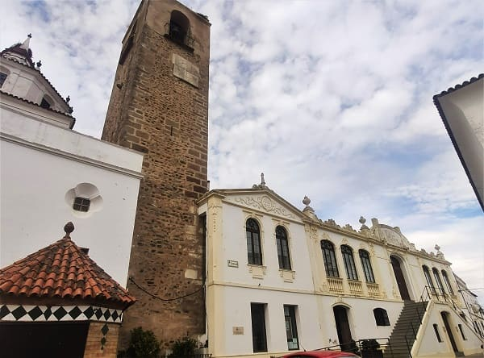
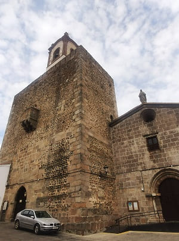
El castillo-fortaleza de Fregenal fue encomendado a la Orden del Temple en el siglo XIII, fecha en la que aparecen las primeras referencias documentadas sobre el edificio. El recinto dispone de siete torres, de las cuales sobresale la torre del Homenaje, sobre la que se edificó un campanario con reloj en el siglo XVIII. La Torre del Polvorín, la segunda en orden de importancia dispone, bajo los balcones del campanario de la iglesia, de un reloj. Al edificio se accede por una portada con arco ojival, construida en sillería, y sobre la misma se observa un escudo atribuido a los templarios y un matacán. Dentro de la fortaleza se encuentra la Plaza de Toros, construida en los años finales del siglo XVIII, y el Mercado de Abastos, de comienzos del siglo XX y adosada a la misma la iglesia de Santa María y la Casa Parroquial.
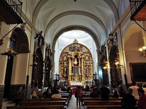
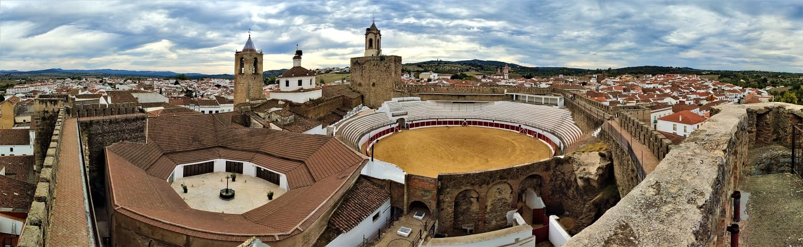
Visitando el resto del pueblo pasaría a la iglesia de san Ildefonso que estuvo dentro del convento de la orden. Esta iglesia ha sido recientemente restaurada, del que sería testigo de la explicación de estos trabajos por un guía del ayuntamiento.
El colegio jesuita de san Ildefonso comenzaría a mediados del siglo XVII. Fue mandado construir por Alonso de Paz Rodríguez, que haría gran fortuna en las Americas y daría una gran parte para la construcción del mismo y para realizar una capilla donde enterrar a sus descendientes.
Tras la expulsión de esta orden a finales del siglo XVIII sería convertida en palacio de una familia noble de la región. A finales del siglo XX sería cedida a una congregación religiosa que debido al estado de ruina lo venderían al ayuntamiento. La iglesia permanecería en este estado hasta el año 2022 que visite yo el pueblo.
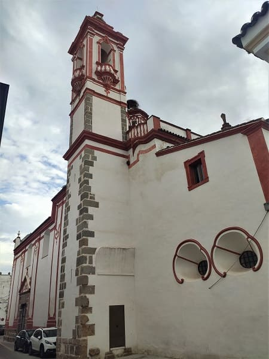
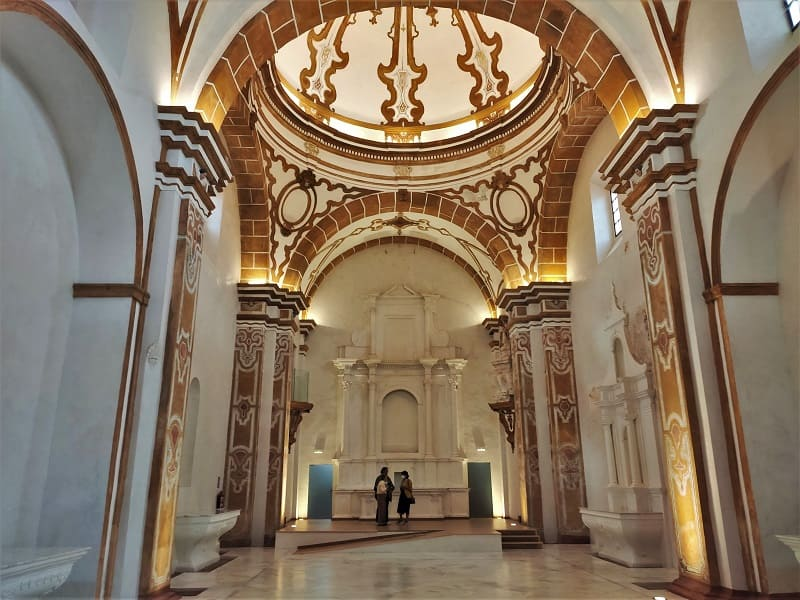
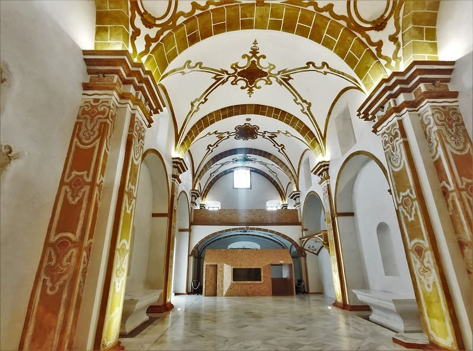
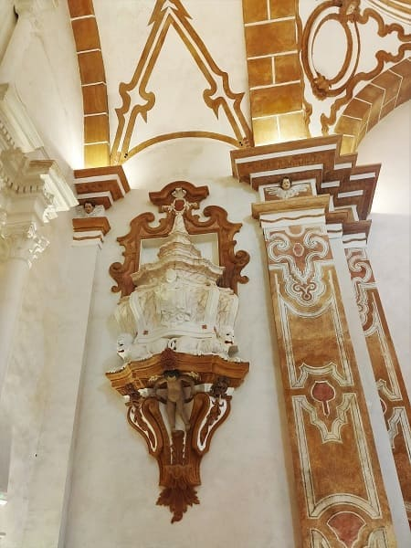
La iglesia de santa Ana es el templo religioso más importante. Se contruyo en el siglo XVI. La planta es de estilo gótico tardío, y el interior de estilo renacentista y plateresco de los que destaca el retablo, diseñado en forma de tríptico que cuenta escenas de la Virgen y de Jesucristo. Contiene otros 6 retablos menores de los que tiene mucho valor el del Nacimiento de Jesus con tallas sobre el mismo.
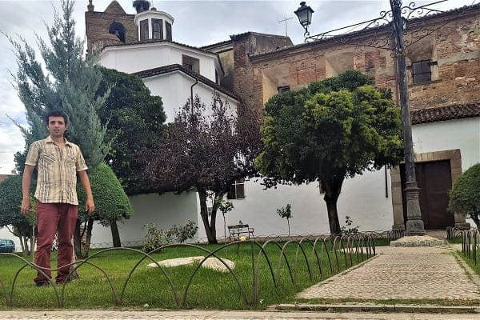
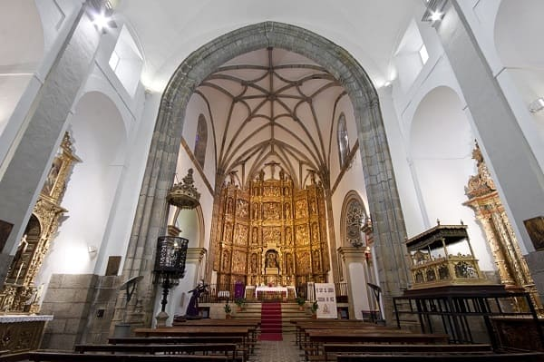
Por último como edificios religiosos esta
el convento de san Francisco también del siglo XVI. Estaría funcionando hasta la desamortización del trienio Liberal a principios del siglo XIX, a partir del que tendría diferentes usos para la ciudad. A principios del siglo XXI sería restaurado para ponerlo en valor como patrimonio de la ciudad.
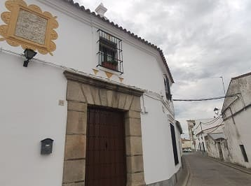
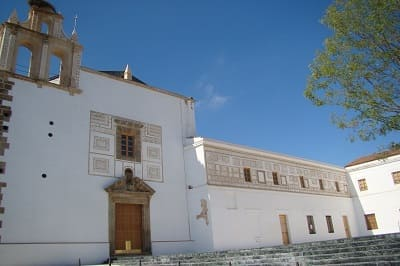
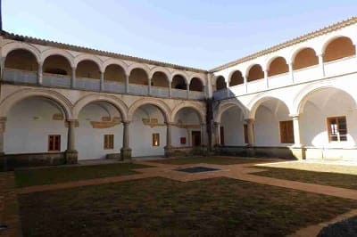
Además cuenta con una calle en la que encontramos varios palacios con bastante aire neo clásico de los nobles de aquella época. Como son
la casa solariega de la familia Peche, el palacio de la marquesa de Ferrera, el palacio de los condes de Torrepilares y el palacio de los marqueses de Rioacabado.
La arquitectura original de la casa solariega de la Familia Peche, pertenece al siglo XVIII, aunque la decoración de la misma, y la estética del patio pertenece a las primeras décadas del siglo XX, fecha en la que el estilo neomudéjar (concretamente el neonazarí) estaba de moda. De la fachada principal sobresale la doble entrada de acceso, con la que el arquitecto pretende crear un curioso efecto óptico. Con la doble entrada se consigue transmitir amplitud y grandeza.
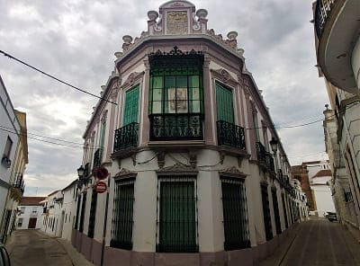
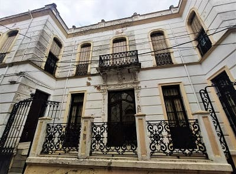
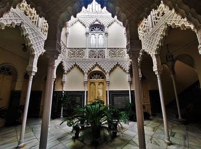


100. Almonaster la Real
100. Almonaster la Real
Siguiendo por la carretera hacia Huelva y ya fuera de la provincia de Badajoz, pararé en
Almonaster la Real. Este pueblo también con el título de pueblo más bonito de España y de Andalucía cuenta con una joya. Una mezquita completamente conservada.
Lo primero que iría a ver sería la mezquita, subiendo para ella por la ruta de las bodegas. Es un camino que da la espalda al pueblo por encontrarse en el otro lado de la montaña que cierra el pueblo. Se pueden disfrutar desde ahí de las bonitas vistas de todo el campo.
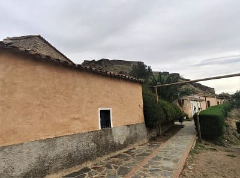
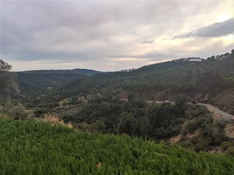
La Mezquita de Almonaster está emplazada en lo más alto del cerro que corona el Castillo. Esta “iglesia antigua de moros”, denominación que figura en un documento de 1.583 conservado en el Archivo General de Simancas, se erigió durante el reinado de Abd al-Rahman III. Por los restos reutilizados en su construcción cabe pensar que, que en época romana, existió un edificio monumental que posteriormente fue transformado en iglesia visigodo - cristiana, subsistiendo con carácter monacal hasta la invasión musulmana. Numerosas columnas y capiteles romanos de los S. I y II, así como interesantísimos vestigios visigodos del V al VII son mudos testigos de este reaprovechamiento. Anexa a la mezquita se encuentra la plaza de toros del pueblo, muy típico de los pueblos que fui viendo.
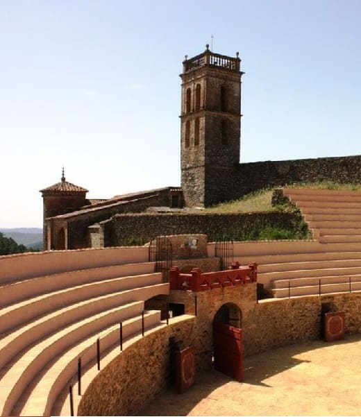
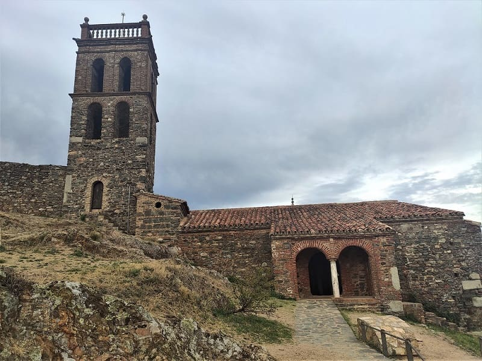
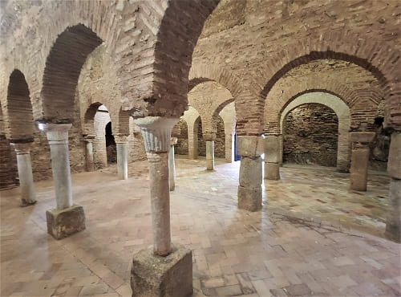
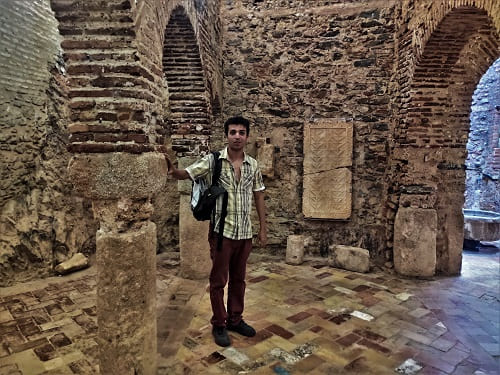
Este pueblo además cuenta con una arquitectura muy homogenea con casas blancas y con unas calles empedradas de una manera similar que hace que te sientas en otra época. La plaza Mayor tiene una estética muy marcada que hace juego con toda la arquitectura del pueblo.
La iglesia de san Martín, de corte gótico mudéjar con claras influencias del sur, resalta debido a su torre, si bien lo que brilla es la mezquita desde la cual se puede ver toda la comarca.
Y aquí la vista de noche de la ciudad.
Ya de noche llegaría al hotel La Niña en
Palos de la Frontera.
Palacio de los Duques de Zafra, s.XV y plaza Mayor.
5
Iglesia de san Bartolome, s.XVII y recinto amurallado.
7
Castillo-fortaleza-plaza de toros, s.XIII y iglesia Santa María.
8
Mezquita s.IX y plaza de toros.
9
Día 3, paseo por pueblos de Huelva (CLICK para continuar)
17 de octubre de 2021
![[Valid RSS]](https://www.onepointsync.com/wp-content/uploads/2016/08/valid-rss-rogers.png "Validate my RSS feed")